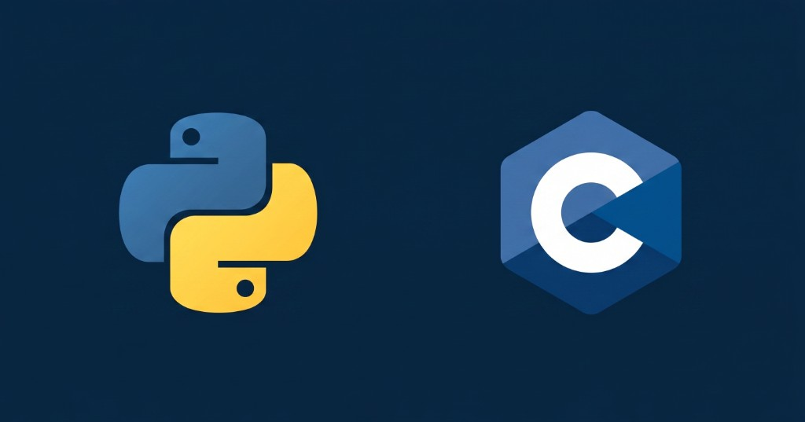

FGA0003 / T02 · G16
Compilador Python → C
Documentação do tradutor de um subconjunto de Python para C, desenvolvido com Flex e Bison na disciplina Compiladores 1 (2026/2).
00 / INTRODUÇÃO
Sobre o projeto

A disciplina aborda os princípios da construção de compiladores e o processamento de linguagens. Como aplicação prática, a equipe constrói um compilador de um subconjunto de Python para C, com análise léxica (Flex), análise sintática (Bison), AST, tabela de símbolos, checagens semânticas e geração de código C.
| Atributo | Detalhes |
|---|---|
| Curso | Engenharia de Software (FCTE — UnB) |
| Turma | T02 · grupo G16 |
| Carga horária | 60 horas |
| Professor | Dr. Sergio Antônio Andrade de Freitas |
| Alvo | Traduzir um subconjunto de Python para C |
| Ferramentas | Flex, Bison, GCC e Make |
01 / PESSOAS
Membros da equipe
Fernanda Vaz
Léxico, integração e documentação.
Manoel Castro
Parser, gramática e erros sintáticos.
Cauã Clemente
AST, semântica e geração de C.
A equipe tem três integrantes. Papéis rotacionam nas sprints. Reuniões semanais às quartas, alinhadas às aulas práticas da disciplina.
02 / ARQUITETURA
Pipeline do compilador
O fluxo implementado no repositório percorre o programa Python até um arquivo C compilável pelo GCC. A geração é feita a partir da AST, com checagens semânticas no parser.
programa.py → Flex → tokens → Bison → AST → análise semântica → código CArquivos centrais: lexer/lexer.l, parser/parser.y, ast.c, tabela.c e geracao.c.
03 / USO
Como executar
É necessário ter Flex, Bison, GCC e Make. No Linux/WSL:
sudo apt-get update
sudo apt-get install flex bison build-essentialgit clone https://github.com/compiladores-01/Compiladores1-T02.G16.git
cd -FGA0003Compiladores1-T02.G16/compilador
make
./compilador-bin entrada.py saida.c
gcc saida.c -o saida_prog
./saida_progNo Windows, use WSL2 ou MSYS2 MinGW64. O exemplo entrada.py cobre while, função def, if/else e print.
04 / STATUS
Estado atual
Após a realização de 7 sprints, o compilador implementa os analisadores léxico e sintático, a AST, a tabela de símbolos, a análise semântica completa e a geração de código C. A equipe também passou a contar com uma suíte abrangente de testes.
- PRONTOTokens, indentação INDENT/DEDENT, operadores relacionais e palavras-chave
def/return - PRONTOParser com blocos por indentação, AST e tabela de símbolos com escopos
- PRONTOChecagens de tipo, variável não definida,
returnfora de função e funções aninhadas - PRONTOEmissão de C com
printf,if/else,whilee funções - TESTADOCasos para lexer, parser, AST, tabela de símbolos e barreiras de tipos
05 / ÍNDICE
Documentação do projeto
Todo o material de MkDocs foi trazido para este layout e atualizado conforme o código do repositório do compilador.
Metodologia, ferramentas, cronograma e mapa das sprints.
04SprintsHistórico Scrum, da organização até a finalização.
05AtasRegistros das reuniões e mudanças de linguagem.
06Atividades semanaisPráticas da disciplina ligadas ao compilador.
07Decisões técnicasJustificativas de arquitetura e design.
08Problemas e soluçõesImpedimentos reais encontrados no código.
09Pontos de controleChecklists de P1 e P2.
10TokensReferência do analisador léxico atualizado.